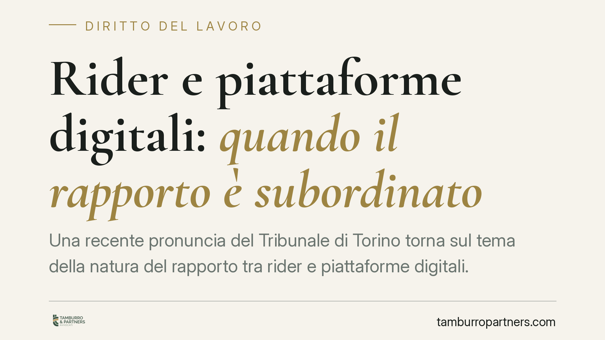

Rider e piattaforme digitali: quando il rapporto è subordinato
Una recente pronuncia del Tribunale di Torino torna sul tema della natura del rapporto tra rider e piattaforme digitali. La questione non è teorica: dalla qualificazione dipendono contributi, tutele e responsabilità. Il giudice guarda al funzionamento concreto dell'algoritmo, non alle etichette contrattuali. Vediamo il quadro normativo e le conseguenze operative per lavoratori e committenti.

Il caso
Il Tribunale di Torino è tornato a esaminare la qualificazione del rapporto di lavoro tra un rider e la società che gestisce una piattaforma digitale di consegna. Il tema ricorrente è sempre lo stesso: dietro la veste formale del lavoro "autonomo" o "a chiamata" si nasconde talvolta un vincolo di subordinazione vero e proprio.
Una precisazione doverosa. La sentenza di merito non ha valore di precedente vincolante nel nostro ordinamento: vale per il caso deciso e orienta, non impone. Ciò che conta, in giudizio, è la ricostruzione concreta di come si è svolto il rapporto. Per questa ragione non riportiamo qui numero ed estremi della pronuncia finché non verificati con certezza: su questi profili preferiamo il rigore alla tempestività.
Inquadramento normativo
Il punto di partenza resta l'art. 2094 c.c., che definisce il lavoratore subordinato come chi si obbliga a prestare la propria attività "alle dipendenze e sotto la direzione" del datore. L'elemento decisivo è l'eterodirezione: il potere del committente di dirigere, conformare e controllare la prestazione, indicando modalità, tempi e luoghi di esecuzione. Quando l'algoritmo assegna i turni, valuta le performance e incide sull'accesso al lavoro, quel potere direttivo può esistere anche senza un capoufficio in carne e ossa.
Accanto alla subordinazione piena opera l'art. 2 del d.lgs. 81/2015. La norma estende le tutele del lavoro subordinato alle collaborazioni che si concretano in prestazioni "esclusivamente personali, continuative e le cui modalità di esecuzione sono organizzate dal committente". La l. 128/2019 ha aggiunto le parole decisive: tale organizzazione rileva "anche mediante piattaforme digitali". Il legislatore ha così riconosciuto che il coordinamento algoritmico può integrare quella etero-organizzazione che fa scattare le protezioni.
Sul piano interpretativo resta centrale Cass. civ., Sez. Lav., 24 gennaio 2020, n. 1663, che ha chiarito la portata dell'art. 2: per applicare le tutele non serve dimostrare la piena subordinazione classica. È sufficiente l'etero-organizzazione della prestazione da parte del committente. Va inoltre tenuta presente la disciplina europea sul lavoro tramite piattaforme (platform work), il cui contenuto va verificato nella versione ufficiale prima di trarne conseguenze applicative.
Implicazioni pratiche
La qualificazione non è un dettaglio formale. Se il rapporto è ricondotto alla subordinazione o all'etero-organizzazione, cambia tutto: obblighi contributivi e assicurativi, retribuzione minima secondo i contratti collettivi applicabili, tutele in caso di malattia e infortunio, disciplina del recesso.
Per il rider significa poter accedere a diritti che il contratto formale escludeva. Per la piattaforma significa un potenziale rischio economico rilevante, esteso alla platea dei collaboratori con condizioni analoghe, oltre a possibili contenziosi previdenziali.
Il giudice, in questi casi, documenta i reali margini di autonomia del lavoratore. Non si ferma alle clausole del contratto: verifica se il rider poteva davvero rifiutare le consegne senza conseguenze, se l'algoritmo penalizzava la mancata disponibilità, se esisteva un vincolo di orario di fatto. È il funzionamento concreto a determinare l'esito.
Cosa fare in concreto
- Rider: conserva ogni evidenza del rapporto reale, screenshot dell'app, comunicazioni, dati su turni e ranking. Sono la prova di come l'algoritmo organizzava la prestazione.
- Piattaforme: verifica la coerenza tra il modello contrattuale adottato e il funzionamento effettivo del sistema di assegnazione e valutazione. La distanza tra i due piani è il primo terreno di contestazione.
- Entrambi: ricostruisci il grado effettivo di libertà nell'accettare o rifiutare le consegne, elemento su cui i giudici concentrano l'analisi.
- Committenti: mappa la platea dei collaboratori con condizioni omogenee, perché una singola pronuncia può innescare rivendicazioni seriali e accertamenti previdenziali.
- Prima di intervenire sull'assetto organizzativo o sui contratti in essere, una valutazione tecnica del singolo caso è opportuna: le soluzioni standardizzate raramente reggono al vaglio del giudice del lavoro.
Conclusione
Il confine tra autonomia e subordinazione, nel lavoro tramite piattaforme, si misura sui fatti. L'etichetta contrattuale non protegge da un accertamento che guardi al reale potere organizzativo esercitato attraverso la tecnologia. È un terreno in evoluzione, dove la prudenza organizzativa vale più di qualsiasi formula astratta.
---
Contributo informativo a cura di Tamburro & Partners - Avv. Giuseppe Tamburro. Non costituisce parere legale.
Ogni storia di lavoro ha i suoi tempi.
Se gestisci HR e vuoi un confronto su contenzioso, ispezioni o licenziamenti, scrivi allo studio. Ti rispondiamo entro un giorno lavorativo.